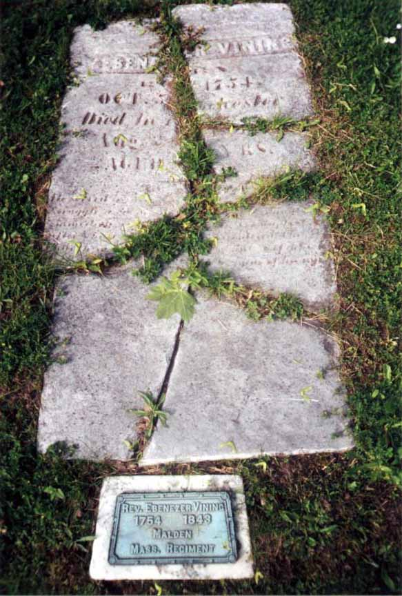

Census Data
| 1790 | 1800 | 1810 | 1820 | 1830 | 1840 | |
| Ebenezer Vining | M 16 and upward | ? | ? | ? | ? | ? |
| Abigail (Eason) Vining | F | ? | ? | ? | ? | dead |
| Hannah Vining | F | married and living in separate household | ||||
| Josiah Vining | dead | |||||
| Lydia Vining | F | ? | dead | |||
| Ebenezer Vining Jr. | [see note below] | ? | dead | |||
| Records Wilber Vining | [see note below] | ? | married and living in separate household | |||
| Joseph Eason Vining Jr. | [see note below] | ? | ? | married and living in separate household | ||
| Jared Vining | [see note below] | ? | married and living in separate household | |||
| Daniel Vining | ? | ? | ? | ? | ? | |
| Mary Vining | ? | ? | ? | ? | ? | |
| Mabel Vining | ? | dead | ||||
| Salmon Vining | ? | ? | married and living in separate household | |||
| Abigail Vining | ? | ? | ? | ? | ||
| daughter Vining | dead |

Death Data
Gravestone and military marker of Ebenezer Vining, in the Mt. Hope Cemetery in Rochester, Monroe County, New York. Although the gravestone is now broken and worn, the inscription was recorded on page 244 of Rochester: A Story Historical by Jenny Marsh Parker (Scranton, Wetmore and Company, Publishers and Book Sellers, 1884, Rochester, New York) as follows (line breaks are mine):